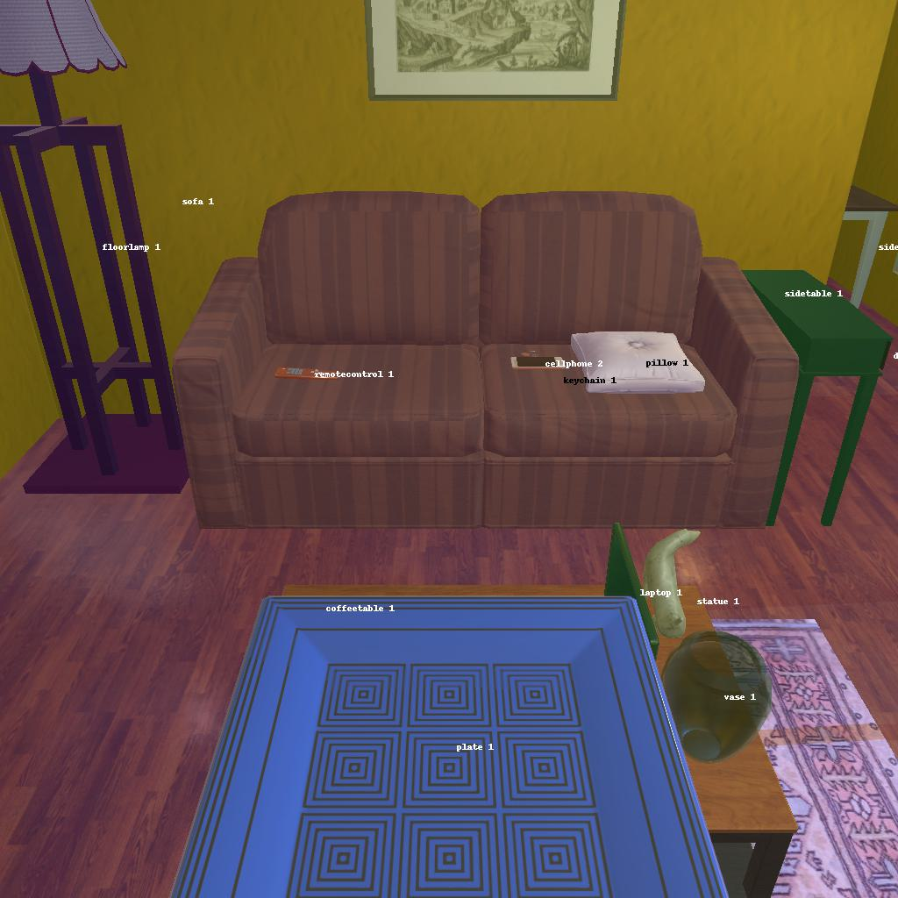

---------------------------------------------------------task: 3---------------------------------------------------------
--------------------------------------------------------------------------------------------------------------------------------------------------------------------
--------------------------------------------------------------------------------------------------------------------------------------------------------------------
Step:--------------------------------------------------------------------------11-------------------------------------------------------------------------------
----------------------------------------
VLM Prompt:
Image1:
**Instruction**
1. Analyze the provided image to identify all visible household objects, focusing on those relevant to the task description "look at plate under the floorlamp."
2. Use the analysis of the image and the task hint "The agent must find an object of the desired type, locate and turn on a light source with the desired object in-hand." to answer the question: what is the most reasonable action in the choices for the task description "look at plate under the floorlamp"?
4. Decide and write the answer using the template: The answer is: (i): , where i is the real number. If there is no desired object in the image, search every place based on **Initial Observation** to find the object. And if no one is exactly correct, choose a similar answer.
**Initial Observation**
You are in the middle of a room. Looking quickly around you, you can see armchair (1), garbagecan (1), tvstand (1), shelf (1-5), sofa (1), coffeetable (1), sidetable (1-2), drawer (1)
**Answer Choices**
(1): go to armchair 1
(2): go to garbagecan 1
(3): go to tvstand 1
(4): go to shelf 1
(5): go to shelf 2
(6): go to sofa 1
(7): go to sidetable 1
(8): go to sidetable 2
(9): go to drawer 1
(10): go to shelf 3
(11): go to shelf 4
(12): go to shelf 5
(13): put plate 1 in/on coffeetable 1
(14): use floorlamp 1
**Answer**
Let's think step by step by following the instructions.
----------------------------------------
----------------------------------------
Original Response:
First, we need to identify the plate mentioned in the task description. In the image provided, we can see "plate 1" on the coffee table. Next, we need to find the floorlamp to complete the task of "look at plate under the floorlamp." The image shows "floorlamp 1" next to the sofa.
Given the task hint, the agent must find the plate, locate and turn on a light source with the plate in-hand. The plate is already on the coffee table, which is not under the floorlamp. Therefore, the agent must first take the plate to the location of the floorlamp.
The most reasonable action from the choices given would be to first take the plate and then use the floorlamp to look at it under the light. However, the option to take the plate is not directly provided. The closest action that would allow the agent to interact with the plate is to "put plate 1 in/on coffeetable 1," but this action does not involve moving the plate to the floorlamp.
Since we need to follow the task hint, and none of the choices involve taking the plate and moving it under the floorlamp, we must choose the action that involves the floorlamp. The action "use floorlamp 1" is the most reasonable choice even though it does not involve moving the plate because it is the only action related to the floorlamp, which is a key part of the task.
The answer is: (14): use floorlamp 1.
----------------------------------------
----------------------------------------
>>> Refine Original VLM Response and Get Pure Action: use floorlamp 1
----------------------------------------
-----------------------------------------------------------------
Running time: 24.849538326263428 seconds
Total Money: 1.0467000000000002
-----------------------------------------------------------------
-----------------------------------------------------------------
Text Observation:Nothing happens.
-----------------------------------------------------------------
UNSUCCEED